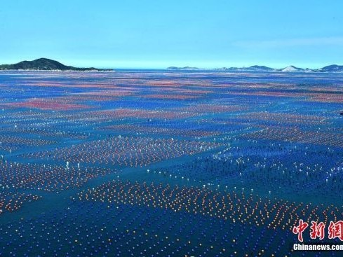
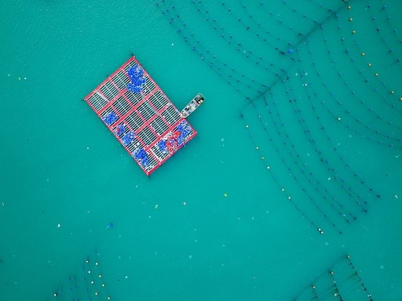
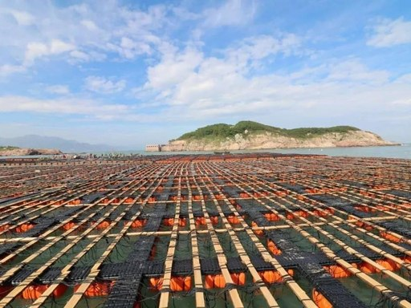
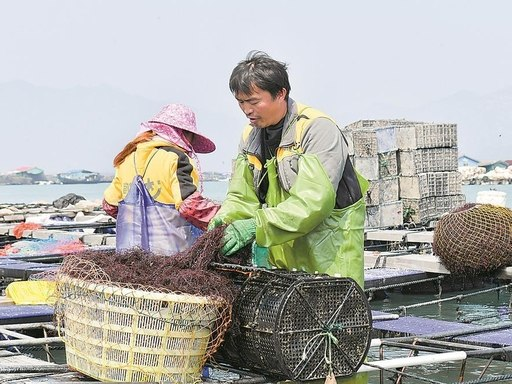
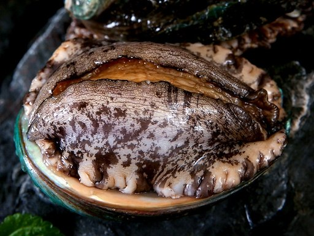
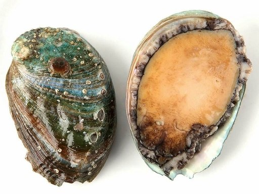
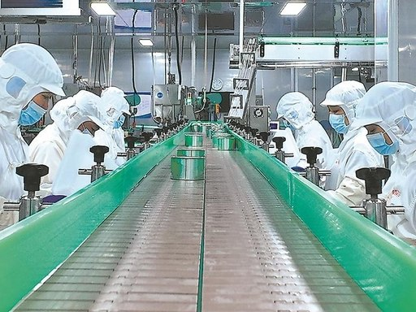
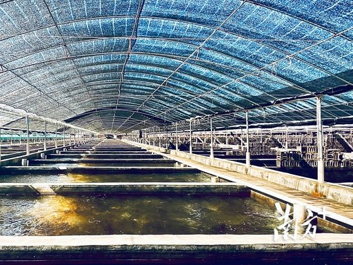
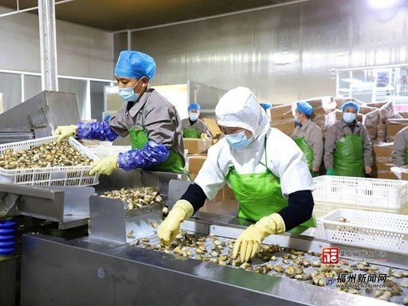

前詹镇依托优质海域和成熟养殖基础，发展以鲍鱼为核心的特色海洋经济。从苗种繁育到工厂化养殖，从鲜活销售到预制菜加工，从生产基地到研学课堂，小鲍鱼正在串起一条兴海富民的产业链，成为前詹向海而兴的蓝色名片。

前詹镇地处南海之滨，海水资源优越，鲍鱼养殖基础扎实。依托省级现代农业产业园和龙头企业带动，当地正加快建设集育苗、养殖、加工、销售于一体的蓝色产业集群。

从鲍鱼苗种繁育、标准化养殖，到冷链加工、品牌销售和研学展示，前詹鲍鱼产业链不断延伸。产业链条越完整，产品附加值越高，带动就业和富民效应也越明显。

一枚鲍鱼连接起养殖户、加工车间、物流渠道和消费市场。前詹鲍鱼产业推动沿海经济发展，也带动品牌建设、科技应用和文旅融合，成为乡村振兴的蓝色引擎。

前詹鲍鱼产业以智慧养殖为方向，通过水质监测、环境管理与数字化记录，推动养殖过程精细化、智能化。实时水质监测 · AI 智能决策 · 科学养殖管理。
前詹鲍鱼养殖基地海源达坐落于前詹镇沿海区域，是惠来鲍鱼产业园的重要牵头企业之一，也是国内规模领先的工厂化鲍鱼养殖企业。基地依托前詹海域独特的冷水团和洁净海水资源，建设标准化养殖池和现代化生产车间，形成鲍鱼育苗、中间培育、成鲍养殖和深加工相衔接的产业体系。游客和研学团队可通过科普参观了解鲍鱼从苗种到成品的成长过程，近距离感受现代海洋牧场和工厂化养殖的产业魅力。
公开资料显示，海源达拥有 24 个养殖基地，占地 600 多亩，年产鲍鱼苗 5 亿多粒、成鲍 400 多吨。
工厂化养殖车间参观、鲍鱼育苗科普展示、预制菜加工展厅、鲜活鲍鱼品鉴、海洋产业研学课堂。
参观需提前预约；车间内部湿度较大，建议穿着防滑鞋；推荐搭配专业科普讲解，适合研学团队、亲子家庭和产业考察团队。

鲍鱼加工生产线
鲜活鲍鱼
鲍鱼产品展示
鲜活鲍鱼品鉴前詹鲍鱼产业以智慧养殖为方向，通过水质监测、环境管理与数字化记录，推动养殖过程精细化、智能化。实时监测水温、pH 值、溶解氧、氨氮等 7 项关键指标；集成“鲍水智护”AI 助手，支持水质分析、养殖建议、问题诊断等智能服务；支持采样、投料、动保、投苗、进排水、出货、消杀、诊断、巡检等 11 种操作类型，记录自动归档。